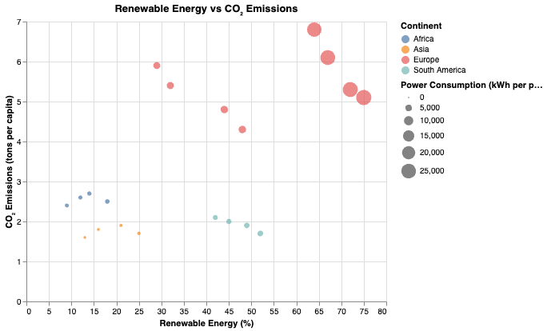
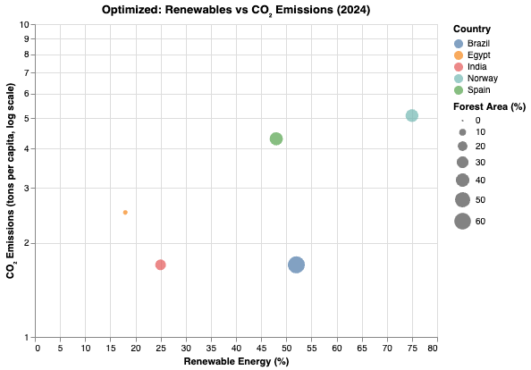

Scatter Plot: Renewable Energy % vs CO₂ Emissions
This scatter plot shows the relationship between renewable energy percentage and CO₂ emissions per person for Norway, Spain, Brazil, India, and Egypt. Colors represent continents, and point size encodes power consumption per person. This helps identify whether higher renewable usage is associated with lower emissions.
Optimized Scatter Plot (2024 Only, Log CO₂ Scale)
This optimized version removes multiple-year clutter by filtering only the 2024 data. A log scale is used for CO₂ emissions, making differences more visible. This chart improves clarity by focusing on the most recent year while retaining color and size encoding.